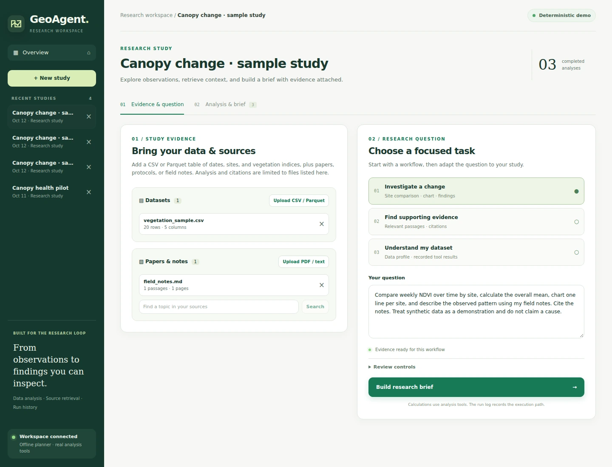
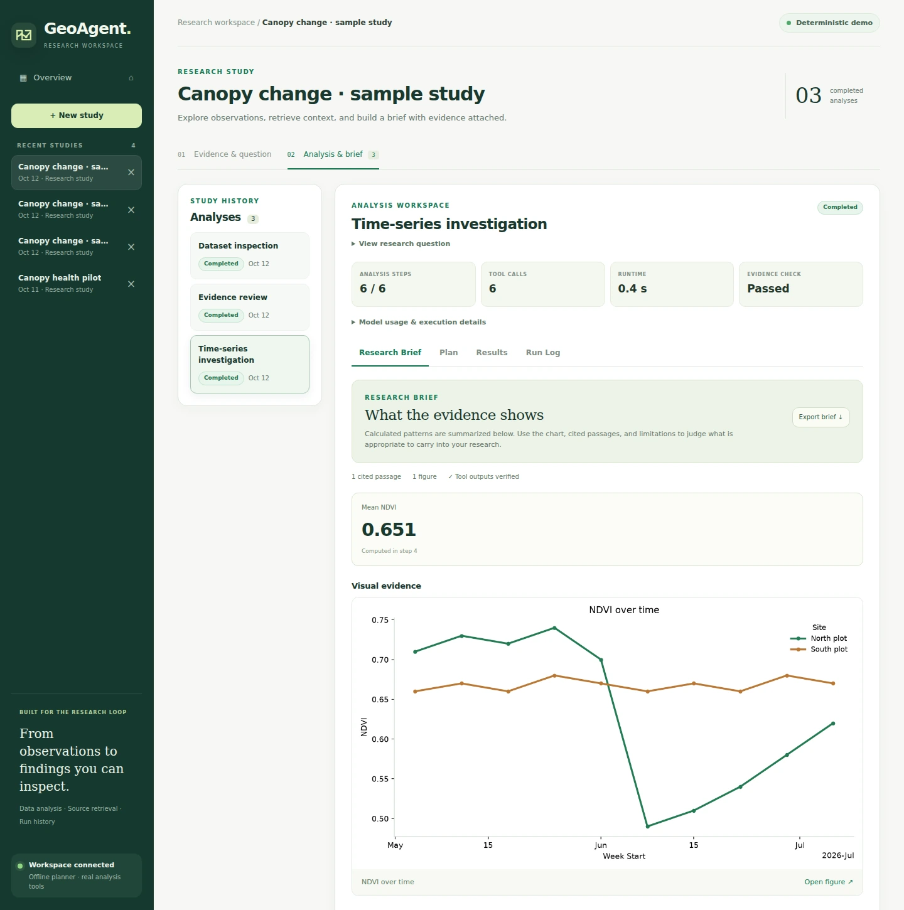

Bring the study together
Upload observations, papers, and field notes into one study.
Agentic AI / Research workspace
Research you can follow.
Evidence you can inspect.
My thesis investigates vegetation stress in satellite time series. I built GeoAgent to compare observations, retrieve research context, and keep the evidence attached to each analysis.

01 / The workflow
Bring your files, ask a focused question, and inspect the result.

Upload observations, papers, and field notes into one study.
Compare sites over time, find source passages, or inspect a dataset.
Review the plan when requested. Analysis tools calculate and record the results.
Inspect charts, values, and citations. Export a Markdown brief.
02 / Inside an analysis
Computed values, site-level charts, and source-linked findings.
North declines, then partially recovers. South stays comparatively stable. GeoAgent computes the pattern and charts both sites.
Each finding links back to its calculation steps and supporting notes.
Read the complete sample brief ↗Synthetic data. Deterministic planner. Real calculations. This sample demonstrates the workflow, not validated forest conditions.

03 / Engineering decisions
A visible execution path, with the evidence preserved at each step.
LangGraph coordinates the workflow. Persisted runs retain tool outputs, approvals, errors, and timing.
Python computes the statistics and charts. Retrieval attaches source excerpts and available page references.
Validated FastAPI endpoints serve the app. MCP exposes the same tools for reuse by other clients.
Validated inputs, read-only SQL, file limits, and timeouts constrain analysis operations.
React and TypeScript power the interface. FastAPI and SQLAlchemy persist sessions, runs, and tool results. SQLite supports the local demonstration; PostgreSQL and pgvector are supported for storage and retrieval.
A 50-task benchmark harness is included for evaluating a stated configuration. No aggregate success rate is claimed here. Optional OpenAI integration requires separate configuration and evaluation; the default planner and embeddings are deterministic.
Verification means the recorded outputs passed the application's implemented checks. It does not establish scientific validity or infer the cause of a vegetation change. GeoAgent supports evidence review; my satellite-model experiments remain a separate research project.
From scattered research inputs to a brief you can review.
Back to selected work ↗